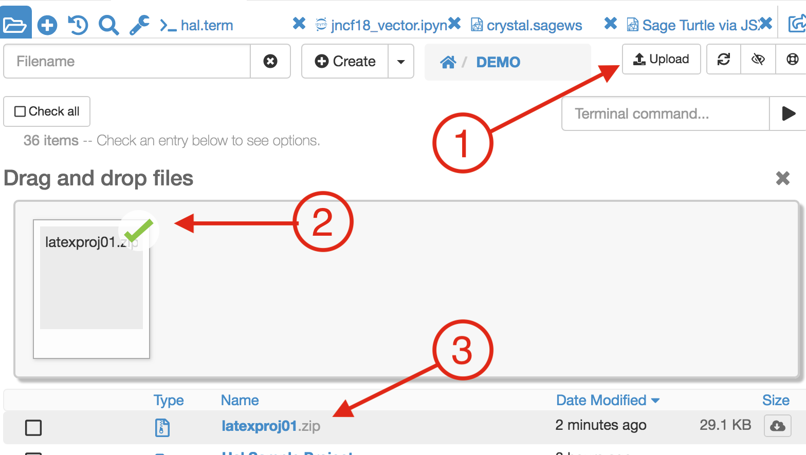

Import from Overleaf/Sharelatex
This little guide explains how to export LaTeX files from ShareLaTeX/Overleaf and import them into a CoCalc project.
Step 1: Export
Overleaf: In the project overview, select one or more LaTeX projects you want to export. Then, click on the Download button (at the top right of the listing, which looks like a cloud with an arrow pointing downwards).
ShareLaTeX: Open your ShareLaTeX project and choose Menu, Download, and Source. Download your project to your local computer as a .zip file.
Step 2: Import
In your CoCalc project, open the File browser where you would like to upload the LaTeX files. Select Upload at the upper right of the file listing and use the file picker to upload the zip file you downloaded in the previous step.
To extract the files from the Zip archive, click on it and then the Extract Files button.
A folder will be created with the name of the zipfile without the .zip extension.
Your files will be extracted into that folder.
In case you’ve exported several projects, they’ll extract as individual zip files.
Just click on them again to extract the actual files.
Congratulations!
Now you are ready to edit your LaTeX files in CoCalc!
Click on the *.tex file and the integrated LaTeX Editor opens up for you.
If you have any problem compiling your files (maybe CoCalc is missing something that is installed in ShareLatex or Overleaf), please don’t hesitate to click the Help button with your tex file open, and create a support request.

{kind=link}
{kind=link}
{kind=link}